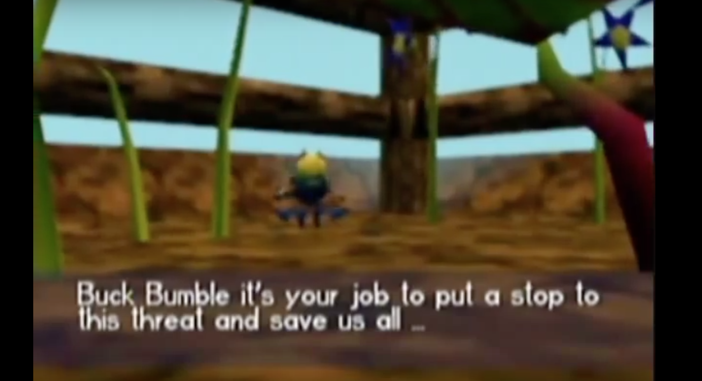
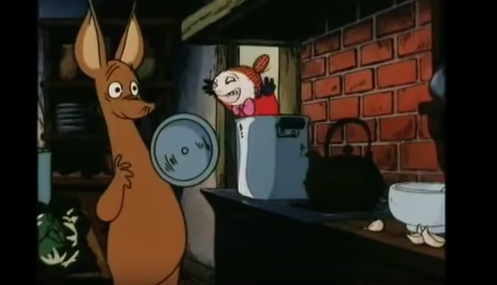
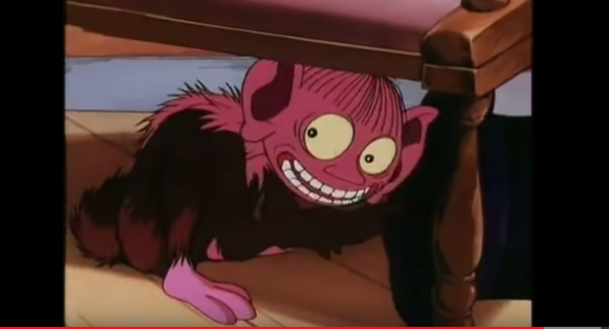
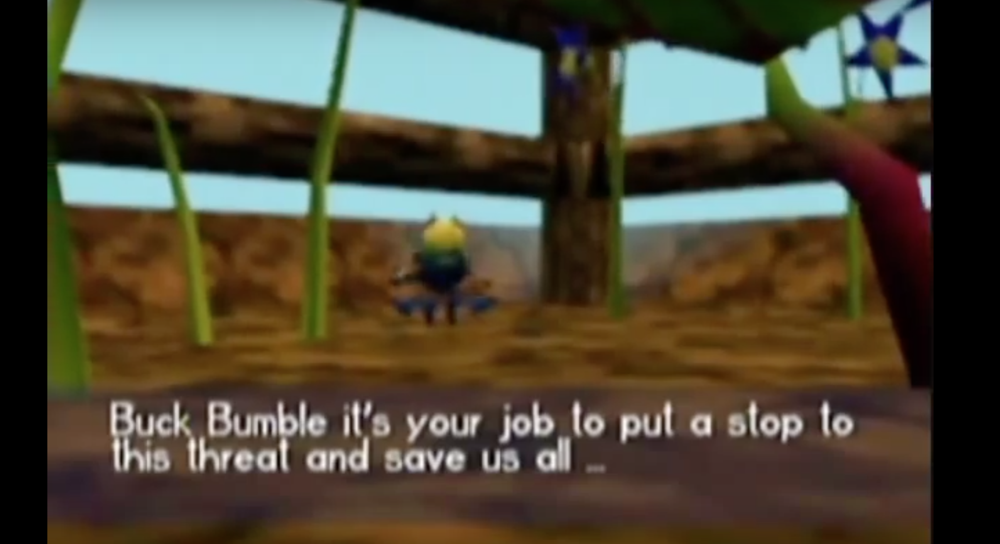
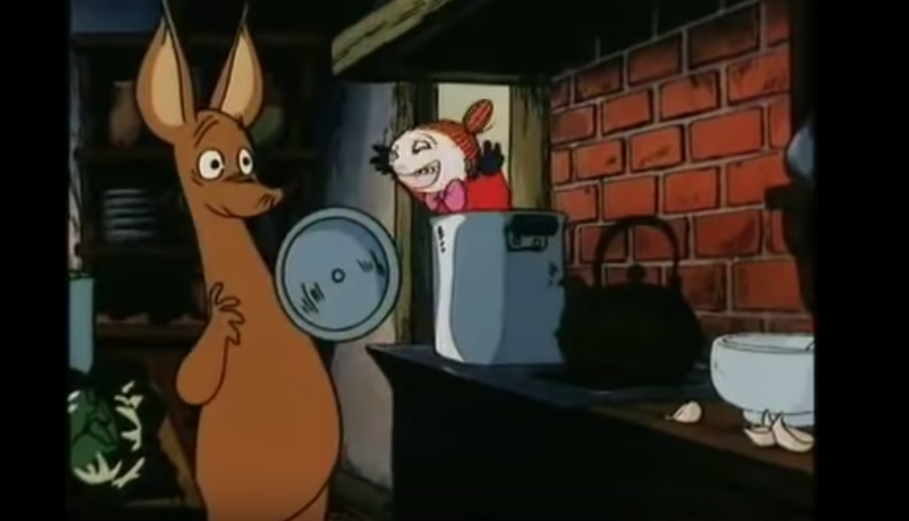
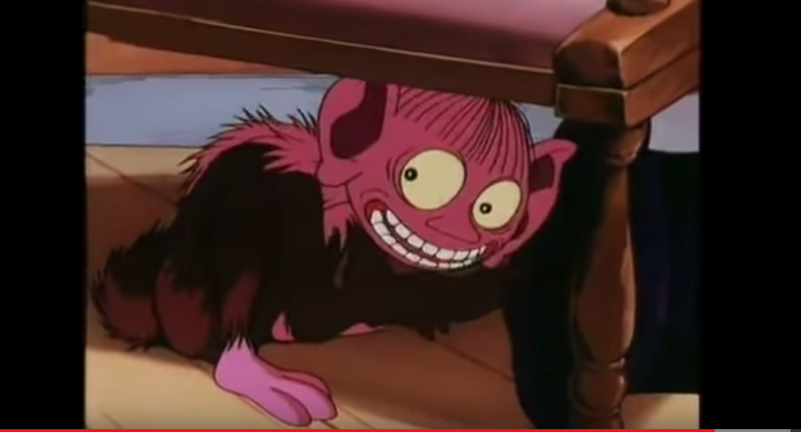

description: Shadertoy has its own language and it’s very similar to GLSL. That said, you can’t just copy and paste shadertoy code direct into a GLSL compiler. This is a very barebones Rosetta Stone to convert.
*** WARNING ::: if the Shadertoy has any “Buffers†or “Textures”, you’re going above my head. I can implement only veerryryyy simple textures and Buffers implies Vertex (.vert) shaders or at the very least CPU engagement. This here is GPU only — Fragment .frag shaders ONLY. Find simple shadertoys and copy. Then you can take the interesting, bespoke functions they’ve coded into them and are sharing !!! Make sure to give credit! ***
mainImage = void main( *leave these brackets empty* ) — delete everythin inside parentheses (these thigns inside in shadertoy get passed as uniforms)
iTime = u_time
fragcoord = gl_FragCoord
Fragcolor = gl_FragColor
iResoltuion = u_resoltuion
iMouse = u_mouse (sometimes it likes when you specify the vec2 u_mouse.xy)
Shadertoy passes uniforms so check code so u can convert all of them
uniforms in ST usually are iWord
uniforms in GLSL usually are u_word.
when in doubt try that conversion!
Some Syntax that is new to me
# = a macro
it runs on compile time
runs once!!!
preprocessing step to run on gpu looks for Macros!!!
cpu injects data into GPU for fast lookup
how rotations work in 3D
360 dgrees = 2 PI radians
so PI = 180 degrees
alias one direction up
linear color space vs gamma color space
gamma color correction
less contrast
power of 2.2 is human
returns are importnatn cuz they update variables
Varying is the type of variable for the vertex shader to communicate with the fragment shader! varying = output of vertex shader destined for the fragment shader
how to embed easily in html:::::: https://github.com/patriciogonzalezvivo/glslCanvas
 




